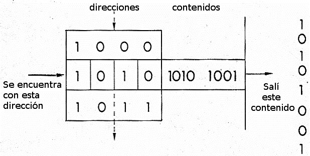
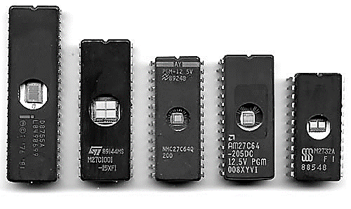

EQUIPO 01 / 1940—1975
1940–75 El Vocero (Pitcher)
¿Dónde guardarían este 1?
1940 1975 1948 / 49 Cargas y ondas 1953 Ferrita 1956 PROM 1966 DRAM 1971 EPROM Mírenlo. Recuérdenlo.
1940–1975 / La era clásica y el nacimiento del silicio
¿Cómo haría una máquina para recordarlo?
1 Ocultar el bit Recuerden este número.
EXPERIMENTO CON LA ATENCIÓN DEL GRUPO Un bit Equipo 1 1940–1975
Miren este uno. Recuérdenlo. Ahora lo ocultamos. Ustedes todavía lo recuerdan. ¿Cómo haría una computadora? Buenos días, ingeniero y compañeros. Somos el equipo uno. Hoy veremos la era clásica de las memorias, entre 1940 y 1975. Vamos a seguir el viaje de este bit: cómo se guarda, cómo se recupera y cómo se puede cambiar. Empecemos con el mapa. EQUIPO 01 / EL RECORRIDO
1940–75 El Maquetador y Diseñador
El mismo bit, cinco maneras de recordar
1940 1975 1948 / 49 Cargas y ondas 1953 Ferrita 1956 PROM 1966 DRAM 1971 EPROM 1 El número no cambia. Lo que cambia es la huella que lo conserva.
01 / ¿Dónde queda? 02 / ¿Cómo vuelve? 03 / ¿Qué cuesta cambiarlo?
Escala temporal proporcional · Hitos seleccionables · Las tecnologías coexistieron
Cinco hitos Fechas en orden El mismo bit
Este mapa tiene cinco paradas. Cada fecha marca un avance en la forma de guardar información. La distancia entre los puntos representa los años. Las tecnologías también coexistieron. Vamos a seguir el mismo bit en todo el recorrido. Carlos comienza con los años cuarenta. EQUIPO 01 / 1940s · 1948 / 1949
1948 El Historiador
Recordar era mantener algo en movimiento
1940 1975 1948 / 49 Cargas y ondas 1953 Ferrita 1956 PROM 1966 DRAM 1971 EPROM 1 Tubo de Williams Cargas en una pantalla de rayos catódicos.
Manchester Baby · 1948 Retardo de mercurio DETECTAR → REGENERAR → RECIRCULAR Pulsos acústicos que circulan y se regeneran.
EDSAC · 1949 Dos soluciones volátiles: sin energía, se pierde la información.
Cargas Ondas Necesitan energía
Material docente / CHM · EDSAC
En los años cuarenta era difícil mantener los datos mientras la computadora trabajaba. El tubo de Williams guardaba cargas en una pantalla. Las líneas de mercurio hacían circular ondas de sonido. Las dos necesitaban energía para conservar los datos. Fueron soluciones importantes, pero difíciles de mantener. Ricardo mostrará un caso real. EQUIPO 01 / 1951
1951 El Especialista de Campo
1951: la memoria sale del laboratorio
1940 1975 1948 / 49 Cargas y ondas 1953 Ferrita 1956 PROM 1966 DRAM 1971 EPROM 1 REMINGTON RAND UNIVAC I 1951 / sistema comercial
01 Dónde Oficina del Censo de Estados Unidos.
02 Qué memoria Siete tanques de líneas de retardo de mercurio.
03 Qué demuestra El almacenamiento de programas llegó a un sistema de uso real.
UNIVAC I Siete tanques Esperar el dato
Computer History Museum · UNIVAC / EDSAC y líneas de retardo
En 1951, UNIVAC I llegó a la Oficina del Censo de Estados Unidos. Su memoria usaba siete tanques con líneas de mercurio. Los pulsos circulaban todo el tiempo. Para leer un dato había que esperar a que llegara. Era un sistema comercial, aunque grande y difícil de mantener. Carlos explica el siguiente cambio. EQUIPO 01 / 1953
1953 El Historiador
Un anillo que recuerda sin corriente
1940 1975 1948 / 49 Cargas y ondas 1953 Ferrita 1956 PROM 1966 DRAM 1971 EPROM 1 Magnetismo Dos estados magnéticos: 0 y 1.
Whirlwind, MIT Whirlwind incorporó ferrita en 1953.
Elegir una posición y conservar el dato al apagar.
RAM describe el acceso; no significa necesariamente volatilidad.
1953 Anillos magnéticos Conservan sin energía
CHM · Whirlwind, 1953
Con el mercurio había que esperar a que llegara el dato. Hacía falta una forma más práctica de encontrarlo. En 1953, la computadora Whirlwind del MIT incorporó memoria de ferrita: pequeños anillos magnéticos. Permitía elegir una posición y conservaba los datos sin energía. Néstor explicará cómo funcionaban esos anillos. EQUIPO 01 / LABORATORIO 01 · 1953
1953 El Ingeniero de Hardware
Dentro de un núcleo de ferrita
1940 1975 1948 / 49 Cargas y ondas 1953 Ferrita 1956 PROM 1966 DRAM 1971 EPROM 1 Elegir Leer el cambio Volver a escribir Elegir Detectar Restaurar
Cada anillo tiene dos estados magnéticos: uno representa cero y el otro, uno. Los cables seleccionan el anillo. Al leerlo, un sensor detecta si cambia su estado. Esa lectura puede cambiar el dato, así que hay que escribirlo otra vez. Podemos recordar tres pasos: elegir, leer y restaurar. Kevin mostrará cómo se elige una dirección. EQUIPO 01 / LEER / ESCRIBIR
1953 El Analista de Lógica y Dirección
Una dirección es una ubicación
1940 1975 1948 / 49 Cargas y ondas 1953 Ferrita 1956 PROM 1966 DRAM 1971 EPROM 1 
↗ Ampliar evidenciaMaterial docente, p. 10, fig. 6 · Braga (2024). MODELO DIDÁCTICO · 4 POSICIONES
00 10100101 01 00111100 10 11110000 11 00001111
Dato de 8 bits Leer Escribir
Dirección 00 seleccionada. Pulsa Leer.
Dirección: dónde Control: qué hacer Datos: contenido
Para usar una memoria necesitamos tres cosas: una dirección, una orden y los datos. La dirección dice dónde buscar. El control indica si leemos o escribimos. Las líneas de datos llevan el contenido. Veámoslo aquí: seleccionamos cero cero y leemos. Después elegimos cero uno, escribimos otro dato y volvemos a leerlo. Carlos continúa con PROM. EQUIPO 01 / 1956
1956 El Historiador
PROM: escribir una vez, recordar después
1940 1975 1948 / 49 Cargas y ondas 1953 Ferrita 1956 PROM 1966 DRAM 1971 EPROM 1 Programable una vez CONEXIÓN FUSIBLE ABIERTO Programar abre los fusibles elegidos.
Sin energía Conserva el contenido sin energía.
No se puede borrar para corregir.
1956: origen de PROM en la cronología de Micron. Las condiciones de programación dependen del dispositivo.
Instrucciones fijas Programar después Una sola vez
Micron · Hot Chips 2016
También se necesitaban memorias para instrucciones fijas. Cambiar el contenido de una ROM de fábrica podía resultar costoso en pequeñas cantidades. PROM permitió programar la memoria después de fabricarla. Su origen se ubica en 1956; los chips comerciales llegaron después. En la versión de fusibles se graba una sola vez. Néstor explicará por qué. EQUIPO 01 / 1956
1956 El Ingeniero de Hardware
PROM: una conexión que no vuelve atrás
1940 1975 1948 / 49 Cargas y ondas 1953 Ferrita 1956 PROM 1966 DRAM 1971 EPROM 1 Seleccionar enlaces Abrir fusibles No se reconstruyen
Una PROM de fusibles guarda el patrón mediante conexiones internas. El programador aplica un pulso de 15 mA para fundir y abrir los fusibles elegidos. Así queda fijada la información, incluso sin energía. Pero esos fusibles no se pueden reconstruir. Si hay un error, no podemos borrar y grabar otra vez el chip. Carlos sigue con DRAM. EQUIPO 01 / 1966 · IDEA / 1970 · PRODUCTO
1966 El Historiador
DRAM: hacer espacio para más bits
1940 1975 1948 / 49 Cargas y ondas 1953 Ferrita 1956 PROM 1966 DRAM 1971 EPROM 1 1966 · Robert Dennard TRANSISTOR CAPACITOR Una celda con un transistor y un capacitor.
1970 · Intel 1103 Hito comercial de DRAM.
Tres transistores por celda; distinta de la idea de Dennard.
Más integración, a cambio de refrescar la información.
Menos espacio Dennard: 1966 Más bits por chip
IBM · DRAM / CHM · Intel 1103, 1970
Aumentar la memoria de ferrita exigía más anillos y conexiones. Hacía falta guardar más datos en menos espacio. En 1966, Robert Dennard propuso una celda con un transistor y un capacitor. Esto ayudó a integrar más bits en silicio. Esa idea es distinta del Intel 1103 comercial de 1970, cuya celda tenía tres transistores. Néstor explicará el refresco. EQUIPO 01 / LABORATORIO 02 · 1966
1966 El Ingeniero de Hardware
El bit se escapa si no lo cuidamos
1940 1975 1948 / 49 Cargas y ondas 1953 Ferrita 1956 PROM 1966 DRAM 1971 EPROM 1 Almacenar carga Compensar fugas Refrescar periódicamente Guardar carga Refrescar Sin energía se pierde
En la celda de un transistor y un capacitor, el capacitor guarda carga y el transistor permite acceder a ella. La carga se va perdiendo. Por eso hay que reponerla periódicamente: a eso le llamamos refresco. También se restaura después de leer. Si se corta la energía, los datos se pierden. Ricardo mostrará cómo llegó esta memoria al mercado. EQUIPO 01 / 1971
1971 El Especialista de Campo
1970–1971: del chip al equipo comercial
1940 1975 1948 / 49 Cargas y ondas 1953 Ferrita 1956 PROM 1966 DRAM 1971 EPROM 1 INTEL / HEWLETT-PACKARD 1103 → Componente → familia de equipos
01 Producto Intel 1103 · 1.024 bits de DRAM.
02 Aplicación Serie HP 9800, documentada por el Smithsonian.
03 Función Datos de trabajo; necesita alimentación y refresco.
Intel 1103 HP 9800 Uso comercial
Smithsonian · Intel 1103 / Computer History Museum · Semiconductors compete with cores
En 1970, Intel lanzó el 1103: una memoria dinámica de mil veinticuatro bits. Un ejemplo de uso fue la serie HP 9800. Estos equipos usaban el chip para guardar datos de trabajo. Esto mostró que la memoria en silicio ya tenía uso comercial. Pero quedaba otro problema: corregir un programa que debía conservarse al apagar. EQUIPO 01 / 1971
1971 El Especialista de Campo
EPROM: corregir sin desechar el chip
1940 1975 1948 / 49 Cargas y ondas 1953 Ferrita 1956 PROM 1966 DRAM 1971 EPROM 1 
↗ Ampliar evidenciaBraga (2024), material docente, p. 11, fig. 7. Ejemplares posteriores: no son la Intel 1702 de 1971. 1971 / INTEL 1702 / DOV FROHMAN
Conservar el programa. 2.048 bits de memoria programable y borrable.
Programar Probar Borrar con UV Reprogramar Intel 1702 Ventana de cuarzo Borrar y reutilizar
CHM · Intel 1702, 1971 / Imagen: material docente, p. 11
En 1971, Intel presentó la EPROM 1702, diseñada por Dov Frohman. Su ventana de cuarzo dejaba entrar luz ultravioleta. Así se podía borrar el chip y volver a programarlo. Las fotos muestran modelos posteriores para reconocer esa ventana. Lo importante era poder corregir el programa sin desechar la memoria. Néstor explicará el mecanismo. EQUIPO 01 / LABORATORIO 03 · 1971
1971 El Ingeniero de Hardware
Una carga atrapada, una ventana para borrarla
1940 1975 1948 / 49 Cargas y ondas 1953 Ferrita 1956 PROM 1966 DRAM 1971 EPROM 1 Carga aislada Conserva el dato Luz UV borra
La EPROM guarda carga en una parte aislada del transistor, llamada compuerta flotante. Esa carga cambia cómo responde el transistor y permanece sin energía. La luz ultravioleta permite retirar la carga. Se borra todo el chip y después se programa otra vez eléctricamente. Kevin comparará estas memorias. EQUIPO 01 / 1971 / COMPARAR OPERACIONES
1971 El Analista de Lógica y Dirección
Cuatro memorias, decisiones diferentes
1940 1975 1948 / 49 Cargas y ondas 1953 Ferrita 1956 PROM 1966 DRAM 1971 EPROM 1 Memoria Sin energía Lectura / escritura Borrado y mantenimiento Ferrita Conserva Lectura con restauración Volver a escribir PROM de fusibles Conserva Una programación No se puede borrar DRAM Pierde Lectura y escritura Refresco periódico EPROM Conserva Se graba eléctricamente Borrado UV del chip
Ferrita: restaurar PROM: una vez DRAM / EPROM
La ferrita conserva los datos, pero hay que restaurarlos después de leer. La PROM de fusibles conserva el contenido, pero solo se graba una vez. La DRAM permite cambiar los datos, aunque necesita energía y refresco. La EPROM conserva el programa y se puede reutilizar después de borrarla con luz ultravioleta. Cada memoria sirve para una necesidad. EQUIPO 01 / ELIGE UNA MEMORIA
1971 El Analista de Lógica y Dirección
¿Qué usarías para guardar un programa corregible?
1940 1975 1948 / 49 Cargas y ondas 1953 Ferrita 1956 PROM 1966 DRAM 1971 EPROM 1 DRAM PROM de fusibles EPROM
Debe conservar el programa al apagar y permitir volver a grabarlo.
Debe conservar Debe corregirse Elegir EPROM
Imaginemos que estamos en 1973. Necesitamos un programa que se conserve al apagar, pero que podamos corregir. Tenemos programador y borrador ultravioleta. ¿Cuál elegirían? La DRAM pierde el contenido al apagar. La PROM de fusibles no permite borrar un error. La respuesta es EPROM: conserva el programa y permite borrarlo para volver a grabarlo. EQUIPO 01 / 1975
1975 El Maquetador y Diseñador
El viaje de nuestro bit
1940 1975 1948 / 49 Cargas y ondas 1953 Ferrita 1956 PROM 1966 DRAM 1971 EPROM 1 1940s Cargas y ondas Guardar el bit
Regeneración y espera 1953 Ferrita Sin energía y selección
Lectura con restauración 1956 PROM Fijar un programa
Se graba una vez 1966 DRAM Más bits por chip
Fugas y refresco 1971 EPROM Corregir y reutilizar
Borrado UV del chip Sostener Conservar Corregir
Nuestro bit empezó como una carga o una onda. Con ferrita pudo conservarse sin energía. PROM fijó el programa. DRAM ayudó a guardar más bits en silicio. EPROM permitió borrar y corregir. Cada avance resolvió un problema y tuvo una condición. Ese es el recorrido que nos lleva a la conclusión. EQUIPO 01 / 1975 · BALANCE DE LA ERA
1975 El Vocero (Pitcher)
El reto no era mostrarlo. Era recuperarlo.
1940 1975 1948 / 49 Cargas y ondas 1953 Ferrita 1956 PROM 1966 DRAM 1971 EPROM 1 Conservar Dejar una huella física que represente el bit.
Recuperar Encontrar y leer el dato cuando se necesita.
Corregir Cambiar el contenido bajo condiciones definidas.
El mismo 1. Distintas soluciones de ingeniería.
El mismo 1 Distintas soluciones Una base fundamental
Volvamos al uno del inicio. Para recordarlo, una computadora necesita dejar una huella física y poder leerla. En esta era se construyeron distintas formas de guardar, encontrar y cambiar información. Lo vimos en los mecanismos y en equipos reales. Por eso defendemos que fue una etapa fundamental: dio más opciones para resolver cada necesidad. Muchas gracias. EQUIPO 01 / FUENTES
1940–75 El Vocero (Pitcher)
Las fechas cuentan historias distintas
1940 1975 1948 / 49 Cargas y ondas 1953 Ferrita 1956 PROM 1966 DRAM 1971 EPROM 1 Base docente: info/EQUIPOS DE HITOS DE MEMORIAS.md y el PDF de tecnologías de memoria.
Material docente Fuentes históricas Preguntas
Utilizamos el material de la cátedra y fuentes de IBM, Intel, el Computer History Museum y el Smithsonian. Las imágenes tienen su fuente indicada. Quedamos atentos a las preguntas del ingeniero y de los compañeros.